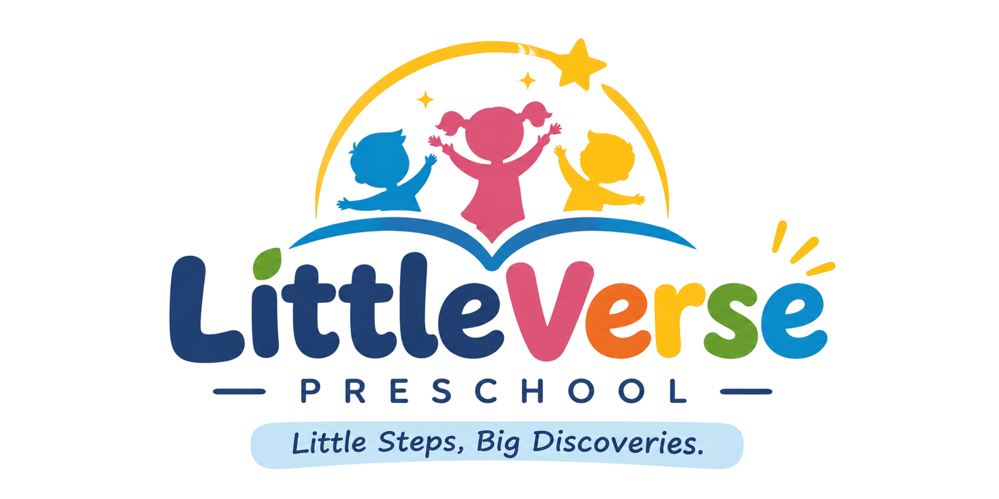

Plan
Thoughtful routines that build independence.

← All programsOur programs
A joyful bridge to primary school, shaped by independence, curiosity and readiness.
Ages 4.5 – 5.5 yearsReady for what’s next
Senior KG prepares children for the next step without rushing childhood.
A day in Senior KG
Thoughtful routines that build independence.
Purposeful literacy and maths play.
Projects that spark ideas and teamwork.
Sharing progress and proud achievements.
Visit LittleVerse to learn about a happy school transition.
Book a visit →